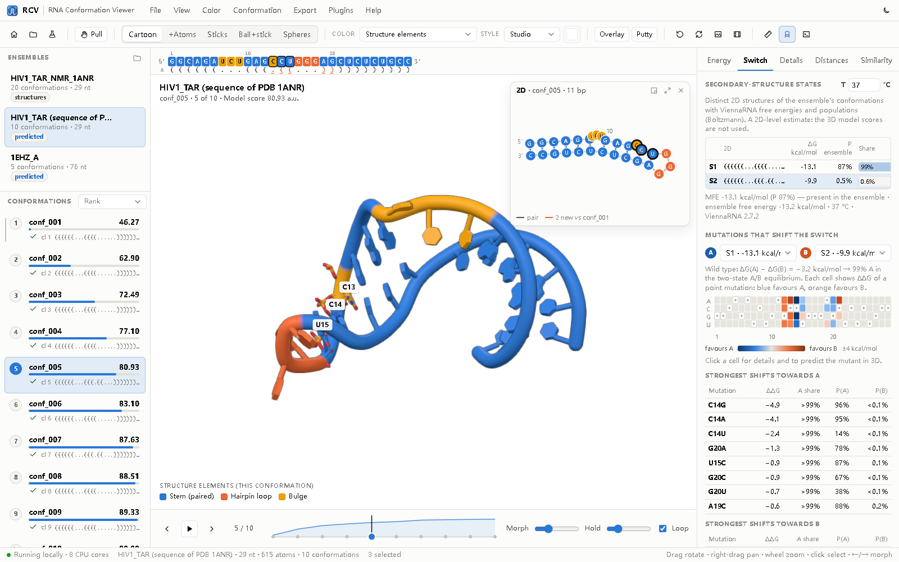
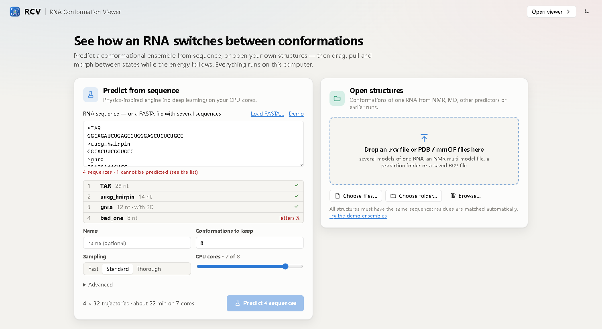
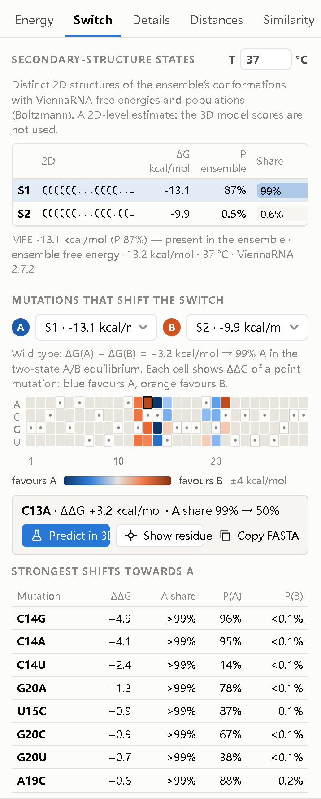
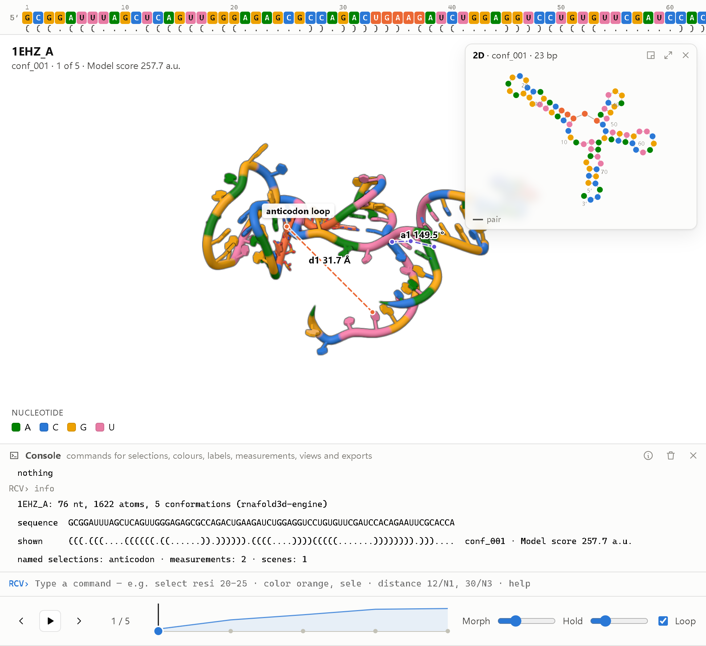
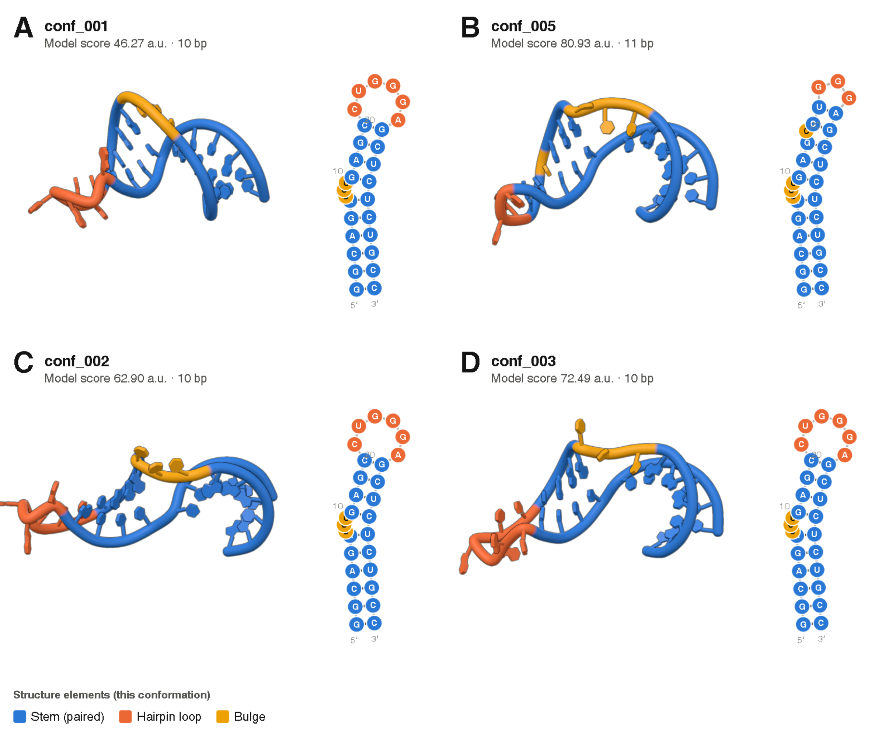

RNA Conformation Viewer
RCV is a free desktop application for predicting, exploring and presenting the conformations of an RNA. It combines the rnafold3d prediction engine with an interactive 3D/2D viewer, and runs entirely on your own computer.
Download RCV 0.5.0 Get started

Main features
- Prediction from sequence. Paste a sequence or a multi-sequence FASTA file; RCV returns a ranked, validated all-atom ensemble.
- Open your own structures. NMR ensembles, MD snapshots, PDB/mmCIF files from any predictor.
- Pull to switch. Drag a residue and the structure moves to the nearest stable computed conformation.
- Linked 2D and 3D. The secondary structure follows the 3D view, with shared colours, hover and selection.
- Switch analysis. Boltzmann populations of 2D states and a point-mutation scan.
- Command console. A selection language for RNA ensembles and familiar molecular-viewer commands.
- Publication output. Figures, figure panels, transition videos, interactive HTML pages and methods text.
- One file per RNA. The open
.rcvformat stores all conformations, 10–14× smaller than PDB.
Download
RCV is free and open-source software, released under the GNU General Public License v3.0. The desktop installers include Python, the prediction engine, ViennaRNA and the demo data; nothing else needs to be installed.
RCV 0.5.0 (23 October 2026)
| Platform | File | Notes |
|---|---|---|
| Windows 10/11 (64-bit) | RCV-0.5.0-Windows-x64-Setup.exe | Installer with Start-menu entry and .rcv file association. |
| macOS 11+ (Apple Silicon) | RCV-0.5.0-macOS-arm64.dmg | For M1/M2/M3/M4 Macs. |
| macOS 11+ (Intel) | RCV-0.5.0-macOS-x86_64.dmg | For Intel-based Macs. |
| Linux / any platform | Source code (zip) | Requires Python 3.10 or later. See Install. |
Older versions are available on the GitHub releases page. Earlier releases were named RNAconfSwitch (0.4) and RNAconformer Viewer (0.3); their settings, plugins and projects are read by RCV 0.5.
System requirements
| Minimum | Recommended | |
|---|---|---|
| Operating system | Windows 10 (64-bit), macOS 11, recent Linux | Windows 11, macOS 13 or later |
| Processor | 2 cores | 8 or more cores (predictions run in parallel) |
| Memory | 4 GB | 16 GB |
| Graphics | Any GPU with WebGL 2 support | |
| Internet | Not required. Only the optional fetch command downloads entries from the PDB. | |
License
RCV is distributed under the GPL-3.0 license. ViennaRNA is a separate package under its own license. three.js (MIT) is included in the viewer.
Install
Windows
- Download
RCV-0.5.0-Windows-x64-Setup.exe. - Run the installer and follow the steps. Optionally create a desktop shortcut and associate
.rcvfiles with RCV. - Start RCV from the Start menu.
If Windows SmartScreen shows a warning, choose More info › Run anyway. RCV uses the Microsoft Edge WebView2 runtime, which is part of Windows 11 and current Windows 10.
macOS
- Download the
.dmgfor your Mac (Apple Silicon or Intel). - Open the disk image and drag RCV to the Applications folder.
- The first time, right-click RCV and choose Open.
To open an .rcv file on macOS, use File › Open inside RCV.
Linux and installation from source
Requirements: Python 3.10 or later with numpy and scipy. ViennaRNA is needed for
prediction from sequence and for the switch analysis.
git clone https://github.com/PrinceWang2018/RNAconformer.git
cd RNAconformer
pip install -e . # installs the rcv and rnafold3d commands
conda install -c bioconda viennarna # or: pip install ViennaRNA
pip install pywebview # optional: native windowCheck the installation
rcv --demo # opens RCV with the HIV-1 TAR NMR ensemble and two predictions
rcv # opens the start pageWithout pywebview, RCV opens in an Edge or Chrome application window. Useful options:
--port 8765, --projects-dir DIR, --shell auto|webview|window|browser.
Where RCV keeps its files
| System | Settings, logs and plugins |
|---|---|
| Windows | %APPDATA%\RCV |
| macOS | ~/Library/Application Support/RCV |
| Linux | ~/.local/share/rcv |
Predictions are saved in Documents/RCV/projects by default (View › Preferences).
Uninstall
Windows: Settings › Apps › RCV › Uninstall. macOS: move RCV from Applications
to the Trash. Source install: pip uninstall rna-conformation-viewer. Your projects and settings
are kept unless you delete the folders listed above.
Tutorial
This tutorial covers the main tasks in RCV. It takes about 20 minutes, most of which is waiting for a prediction. For every menu, option and command, see the full user guide.
Contents: Start page · Predict · The window · Pull to switch · Switch analysis · Console · Export · Shortcuts
The start page
When RCV starts, it shows the start page. Paste a sequence to predict its conformations, or click
Open files… to open structures you already have (.rcv files, PDB/mmCIF,
multi-model NMR files, prediction folders). Fetch PDB… downloads an entry from the PDB.
Recent predictions are listed below. To look around first, click Demo ensembles.

Predict from a sequence
- Paste an RNA sequence (plain text or FASTA; T is read as U). Leave the box empty to run the demo sequence (HIV-1 TAR, 29 nt).
- Choose the number of conformations, the sampling depth (Fast, Standard or Thorough) and the CPU cores. RCV shows an estimated run time.
- Optional, under Advanced: a known secondary structure in dot-bracket notation and the random seed.
- Click Predict. The progress view shows each stage, the time left and notes on what the engine is doing.
A multi-record FASTA file starts a batch (up to 100 sequences). When the batch ends, choose which
result to open; the others are saved as .rcv files with a summary table.
Typical run times on an 8-core laptop: a 12–14 nt hairpin with Fast sampling, 10–60 s; a 29 nt hairpin with Standard sampling, 5–7 minutes.
Explore the ensemble
The conformations are listed on the left, ordered by energy. Hover a conformation to preview it; click it to morph the structure. The timeline below the 3D view plays through all conformations. The right panel shows the energy profile and terms (Energy), the switch analysis (Switch) and full details (Details).
- Mouse: drag to rotate, right-drag to pan, wheel to zoom, double-click to centre, right-click a residue for its menu.
- The sequence bar shows the sequence and dot-bracket of the current conformation; changed pairs are underlined.
- The 2D window (D) draws the secondary structure in the same colours as the 3D model and morphs with it.
Pull to switch
Press G (or hold Alt) and drag a residue. The structure stretches, and the computed conformation that best matches the pull is shown as an orange preview with its energy change. Release to morph to it. Explore new conformations runs the engine with the pull as a temporary bias and adds the new stable conformations to the ensemble.
Switch analysis
The Switch tab lists the distinct secondary structures in the ensemble with their free energy and Boltzmann population at a chosen temperature (0–95 °C).
Choose two states, A and B, to scan all point mutations. The heat map shows how each mutation shifts the balance: blue favours A, orange favours B. Click a cell to select the residue, copy the mutant sequence, or Predict in 3D.
This analysis uses ViennaRNA at the secondary-structure level. Populations are estimates, not experimental values.

Command console
Open the console with `. Type one command per line; Tab completes and
help lists all commands. Some examples:
select loop, resi 23-27 and unpaired
color orange, loop
show sticks, switching
distance d1, 22/N1, 27/N3
orient helix H2
png 3000, 2000, 600Commands can be saved in a script file (.rcvs) and run with run script.rcvs.
Every command is stored in the .rcv file as a reproducible record.

Save and export
| Output | How |
|---|---|
| .rcv file | Ctrl+S. All conformations, energies, 2D structures and your current view in one file. |
| Image | Ctrl+E. PNG, TIFF or PDF, 300–1200 dpi, optional legend and energy panel. |
| Figure panels | Export › Figure panels. Several conformations in the same orientation, each with its 2D structure. |
| Video | Export › Video or Transition A → B. MP4, WebM or PNG frames, 720p to 4K. |
| Interactive HTML | Export › Interactive HTML page. One file that opens in any browser, for supplements and reviewers. |
| Methods text | Export › Methods text. A methods paragraph and citation generated from the ensemble record. |

Keyboard shortcuts
| G pull | D 2D window | M measure | ` console |
| ←/→ previous/next | Space play | 1–5 representation | C colour scheme |
| R reset view | S snapshot | Ctrl+O open | ? help |
Command line
RCV also works without the window:
rcv batch my_rnas.fasta # predict every sequence, one .rcv each
rcv convert models/*.pdb -o my_rna.rcv # structures to one .rcv file
rcv info my_rna.rcv --methods # contents and methods paragraph
rcv extract my_rna.rcv -o pdb/ # back to PDB files
rcv html my_rna.rcv -o my_rna.html # interactive web pagePlugins
RCV can be extended with two kinds of plugins. Place the plugin file in the plugins folder of
the RCV user data folder and restart RCV. Plugins appear in the Plugins menu, as tabs in the right
panel, or as new metrics in the energy panel.
| System | Plugin folder |
|---|---|
| Windows | %APPDATA%\RCV\plugins |
| macOS | ~/Library/Application Support/RCV/plugins |
| Linux | ~/.local/share/rcv/plugins |
Available plugins
| Plugin | Type | Description |
|---|---|---|
| Distance tracker | Built-in | Measure distances between residues and follow them across conformations; each distance becomes a metric. |
| Similarity matrix | Built-in | Pairwise RMSD matrix of all conformations in the ensemble. |
| Tertiary contacts | Python | Counts tertiary contacts and the 5′–3′ end distance for each conformation. Example plugin. |
Have you written a plugin that others could use? Send it to us and we will list it here (see Co-creation Program).
Writing an interface plugin (JavaScript)
An interface plugin is an ES module whose default export has an activate(api) function.
The API gives read-only access to the current ensemble and selection, events (ensemble,
conformation, morph, selection, …), panels, menu items,
overlays, colour schemes and metrics.
// my-plugin.js
export default {
id: 'my-plugin',
name: 'My plugin',
version: '1.0',
description: 'Short description shown in the Plugins menu.',
activate(api) {
api.metrics.register({
key: 'n_residues', label: 'Residues', unit: '', lower_is_better: null,
description: 'Number of residues (example).',
compute: (ens, k) => ens.residues.length,
});
},
};Writing an analysis plugin (Python)
An analysis plugin defines a PLUGIN dictionary and a compute(sequence, residues)
function that returns one value per metric. residues is a list (5′ to 3′) of
{atom_name: xyz} dictionaries after superposition.
# end_distance.py
import numpy as np
PLUGIN = {
'id': 'end_distance',
'name': 'End distance',
'metrics': [{'key': 'end_to_end', 'label': "5'-3' distance", 'unit': 'Å',
'lower_is_better': None, 'description': "C4'-C4' distance of the chain ends."}],
}
def compute(sequence, residues):
a, b = residues[0].get("C4'"), residues[-1].get("C4'")
if a is None or b is None:
return {'end_to_end': None}
return {'end_to_end': round(float(np.linalg.norm(a - b)), 2)}The plugin API is version 1 and unchanged since RNAconfSwitch 0.4. The built-in plugins in
src/rcv/static/plugins
are complete examples.
Release Notes
RCV 0.5.0 — 23 October 2026
Changed
- Renamed to RCV (RNA Conformation Viewer) with a new logo. Command
rcv, user foldersRCV. Settings, plugins and projects of RNAconfSwitch 0.4 are still read. - Ctrl+S now saves an
.rcvfile; the JSON session is now called a workspace (Ctrl+Shift+S).
New
.rcvfile format: all conformations of one RNA with energies, 2D structures, validation, provenance and the viewer state, 10–14× smaller than PDB. Command-line toolsrcv convert,rcv info,rcv extract.- 2D structure window linked to the 3D view, morphing in step with it.
- Transition video A → B, directly or through intermediate conformations.
- Batch prediction from a multi-sequence FASTA file (
rcv batch). - Command console with an RNA selection language and about 45 commands; script files.
- Switch analysis: 2D-state populations and point-mutation scan.
- Figure panels, interactive HTML export and methods text.
rnafold3d engine 2.0.1 — 22 October 2026
- Valid all-atom ensembles from sequence alone for 26/26 benchmark targets (14–192 nt).
- About 2–4 Å accuracy for hairpins and small motifs. Large multi-branched RNAs are not yet predicted accurately (no tertiary-contact term).
Earlier versions
- 0.4 — released as RNAconfSwitch.
- 0.3 — released as RNAconformer Viewer.
Full history: CHANGELOG.md.
Statistics
Usage of this website and downloads of RCV. The numbers are updated once a day.
Visitors by country
| Country / region | Visits | Share | |
|---|---|---|---|
| No data yet. | |||
Visits per month
| Month | Visits | |
|---|---|---|
| No data yet. | ||
Downloads by platform
| Platform | Downloads | Share | |
|---|---|---|---|
| No downloads recorded yet. | |||
Downloads by release
| Release | Date | Downloads |
|---|---|---|
| No releases published yet. | ||
Last updated: –. Visits are counted with GoatCounter, which uses no cookies and stores no personal data; a visit is one visitor per page per day, and countries are derived from the visitor’s network address, which is not stored. Downloads are the installer downloads from GitHub releases; copies of the source code are not counted.
Co-creation Program
RCV is developed together with the people who use it. The Co-creation Program is open to research groups, students, educators and developers who want to help shape the software. Participation is free.
Ways to take part
| Role | What you do |
|---|---|
| Early tester | Try pre-release versions on your own RNAs and report problems or unclear behaviour. |
| Data contributor | Share structures, NMR ensembles or experimental data that can be used for testing and benchmarking. |
| Plugin developer | Write plugins for analyses you need. Good plugins are listed on the Plugins page. |
| Code contributor | Fix bugs or add features through pull requests on GitHub. |
| Teaching partner | Use RCV in courses and help prepare tutorials and teaching material. |
| Translator | Help translate the interface and documentation. |
What participants receive
- Early access to new versions and direct contact with the developer.
- Influence on the development plan; requests from participants are considered first.
- Acknowledgement in the release notes and on this website.
- For substantial scientific contributions, co-authorship on related publications may be discussed.
How to join
- Send an email to princewang2018@gmail.com with the subject “RCV Co-creation Program”.
- Tell us briefly who you are, what you work on, and how you would like to take part.
- We will reply within a few working days.
You can also start directly by opening an issue or a pull request on GitHub.
About
RCV (RNA Conformation Viewer) predicts, explores and presents the conformations of an RNA. Many RNAs do not have a single structure but switch between several; RCV is built to look at these ensembles as a whole rather than at one model at a time.
How it works
The rnafold3d engine is physics-inspired and does not use deep learning:
sequence ─► ViennaRNA secondary-structure hypotheses (MFE + distinct suboptimals)
─► rigid all-atom A-form stems (calibrated geometry)
─► fold-tree search in torsion space (simulated annealing)
─► loop closure and clash relief
─► independent all-atom validation
─► ranked, structurally distinct ensemblePredictions run on your CPU cores and the 3D view is rendered on your GPU. No data leave your computer. Runs are deterministic for a given seed and version.
Limitations
- Accuracy is good for hairpins and small motifs (about 2–4 Å) but limited for large multi-branched RNAs.
- Switch analysis is at the secondary-structure level; 3D energies are model scores, not free energies.
- Molecular surfaces, non-canonical base-pair annotation and multi-chain complexes are not yet supported.
Benchmark details: engine status and benchmark.
How to cite
If you use RCV in your work, please cite:
Wang Z. RCV: RNA Conformation Viewer, version 0.5.0 (2026).
https://github.com/PrinceWang2018/RNAconformerPlease also cite ViennaRNA when you use predictions from sequence:
Lorenz R. et al. ViennaRNA Package 2.0. Algorithms for Molecular Biology 6, 26 (2011).
The methods text generated by RCV (Export › Methods text) includes the exact versions and parameters of each run.
Developer
RCV is developed by Zixiang Wang.
Acknowledgements
RCV uses ViennaRNA, NumPy, SciPy, three.js and pywebview. Benchmark structures are from the RCSB Protein Data Bank.
Contact
| For | Where |
|---|---|
| Bug reports and feature requests | GitHub Issues |
| Questions about using RCV | GitHub Issues or email |
| Collaboration and Co-creation Program | princewang2018@gmail.com |
| Source code | github.com/PrinceWang2018/RNAconformer |
Reporting a problem
Please include:
- the RCV version (Help › About) and your operating system;
- what you did, what you expected, and what happened;
- the log file from the RCV user data folder (see Install);
- if possible, the sequence or structure file that shows the problem.